缺什么，直接跟它说。它读完你本机的软件清单，给你一份方案；你点头，功能就真的长出来 —— 而且长在侧栏、来源扇区、设置该在的地方，不是一个孤零零的入口。
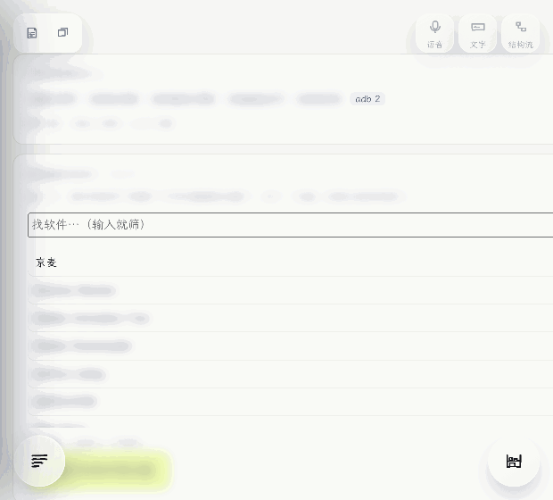
举一个真实的例子：你说「我想让 Notion 里的东西更好用一点」。
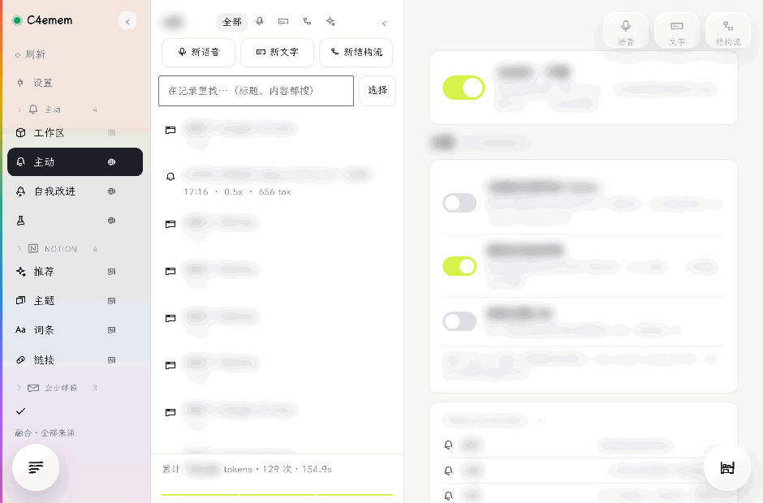
核心是一个跑在 127.0.0.1:8770 的本地 HTTP 服务 —— 检索、生成、主动式全在里面。
外面那层壳很薄：菜单栏、窗口、桌面 Pet、网页↔原生桥。它只做"网页做不到的那几件事"。
这样拆的好处：核心是纯 HTTP，手机端 / 小程序 / 别的壳都能复用同一套；而换壳不用重写任何业务。
点一下开始说，再点一下结束 —— 音频不出本机，识别在本机做。说完它把结果并成文字，你可以直接改。
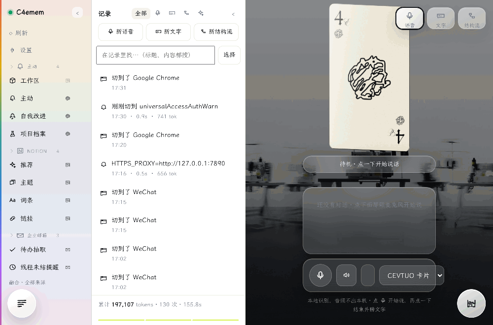
直接打字。下面那几个按钮是"去哪找"：换一个来源、或者一路往下问。答的时候会告诉你它是从哪儿看到的。
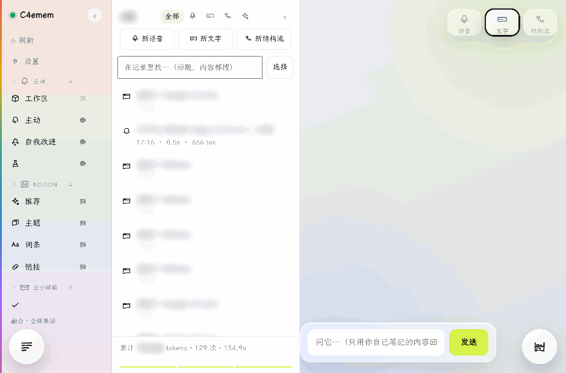
把"要做的事"画成一张图：一块一块，块之间有类型化的端口 —— 颜色不同就是类型不同，两边对得上才连得起来。这就是"线到底有什么意义"的答案：如果每个口什么都收，线就只是装饰。
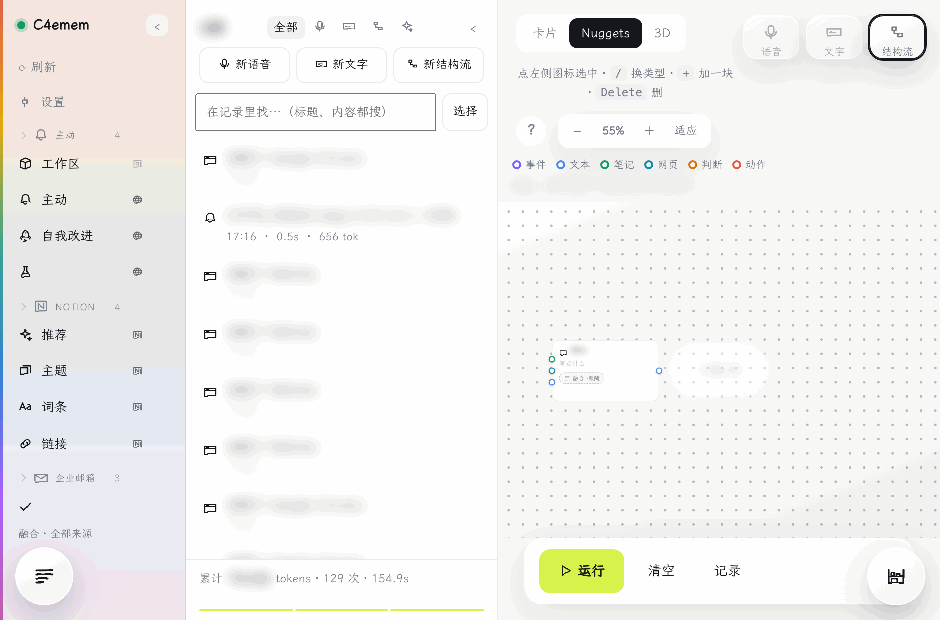
卡片（自由画布，x/y 就是位置）· Nuggets（紧凑网格）· 3D（有厚度的影子）。同一张图，三种看法。
实线=数据流 · 虚线=先后顺序 · 点线=条件（判断为真才往下走）。一眼分得出这几种关系。
它按拓扑序一块一块执行：没填的部分跳过，填好的照跑。不用等一张完美的图。
融合永远在正中最里面那一格（它是唯一同时满足"正中最中"和"离按钮最近"的位置）。选中某个来源，最左边那一栏就会染成它的颜色 —— 你现在在哪儿，一眼看得出来。
Notion 的四个库合成一格（它们本来就是同一个软件里的库）；邮件两条路也合一。分成好几格的时候，你只会在几个几乎一样的名字里挑。
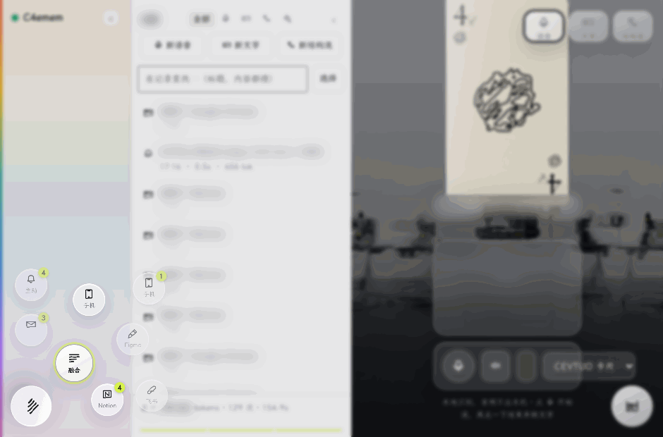
关键词一条腿（全文索引，擅长精确词），向量一条腿（擅长"意思相近"），两条的结果用 RRF 融合。命中处开窗给你看上下文，点开是全文，还能一键跳回那个软件。
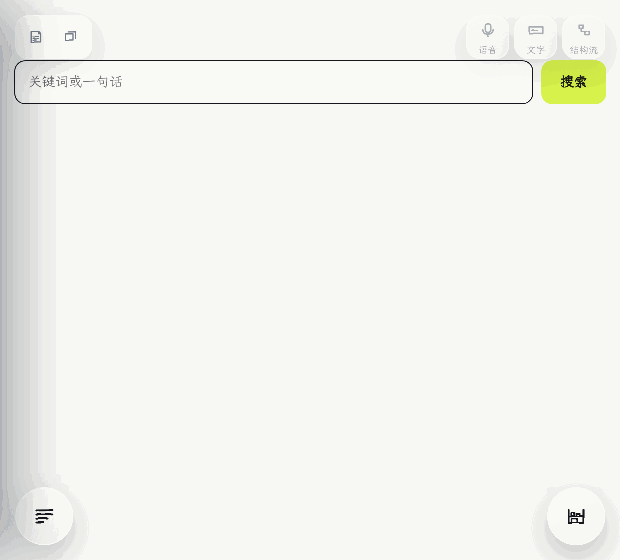
它做过的事都在这儿（只增不改）。本地按词搜、多选、批量删除 —— 删的只是流水，会话留着。
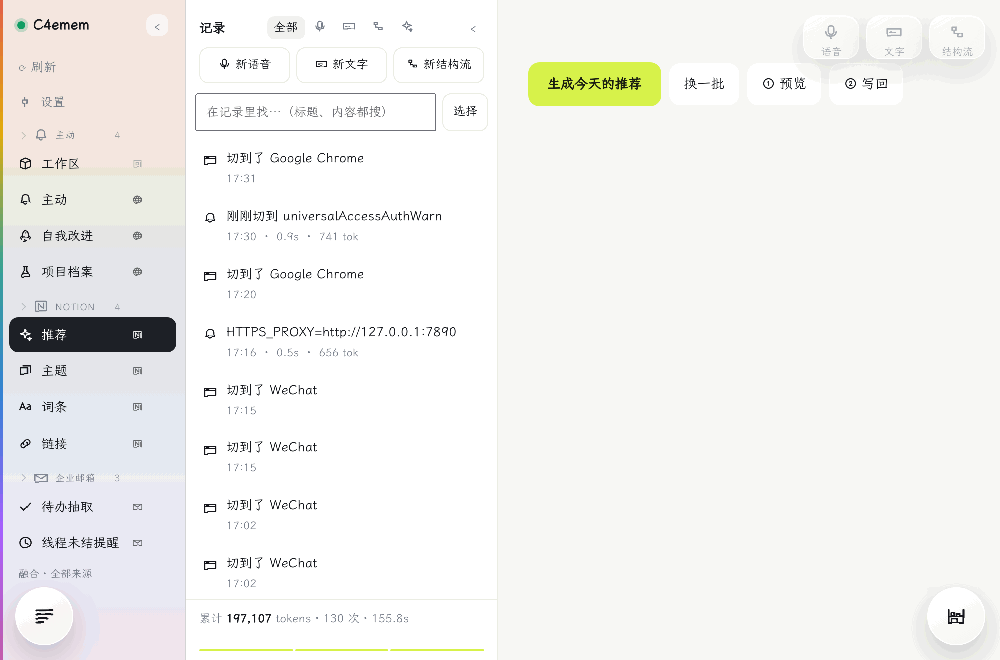
每个软件一块：它带来了多少内容、带来了哪些功能。想知道"我到底从哪个来源拿了多少东西"，看这一屏。
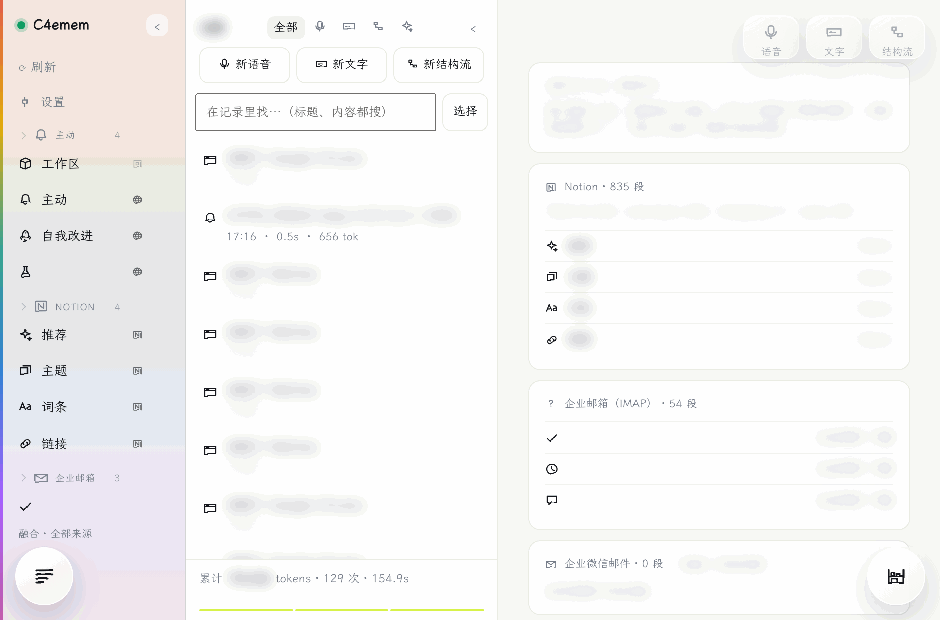
右下角一颗球，什么都能往里放：拖一段话、拖一个文件、拖一张图、⌘V 粘贴、或者选中一段再点它。攒着，回头一起处理。
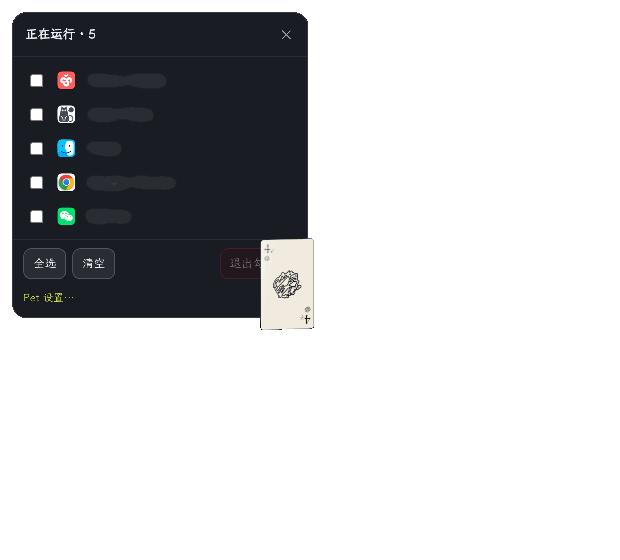
鼠标放上去就展开一圈你正在开着的软件，指针压到哪个哪个亮，中轴写着它的名字。敲字母直接切过去（C 就是 Chrome），打字就筛选；全局快捷键 ⌥⌘C / ⌥⌘4 随处呼出。
右键是一张勾选清单：列出正在运行的软件，勾几个一起退掉 —— 退出是破坏性动作，所以按钮是红的、没勾时点不动、退完还会回来告诉你哪几个没退成。
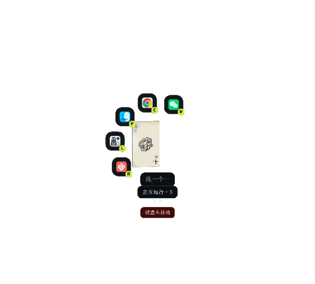
OUR PHILOSOPHY
一个工具的价值不在于它能接多少服务，而在于它替你想到了什么。
所以我们把两件事放到最重：它主动给你的东西，和它自己长大的能力。每个来源都从"它到底是一份内容，还是一双手"开始判断 —— 分不清这两件事，就会答错"能不能接"。界面上每一个"我们做不到"，都写成一句人话，而不是一个转圈。
INSTALL
⌥⌘C / ⌥⌘4 随处呼出轮盘；鼠标放到小家伙上也会展开。⚠️ 这是自用为主的软件：它读的是你自己电脑上的东西。第一次运行要填你自己的来源凭据（Notion / 邮箱 / 手机等），不会带任何别人的配置。
127.0.0.1，外部访问不到；页面与核心同源。所有内容默认留在本机，只有你主动发问、且需要联网时才把那一问送出去。